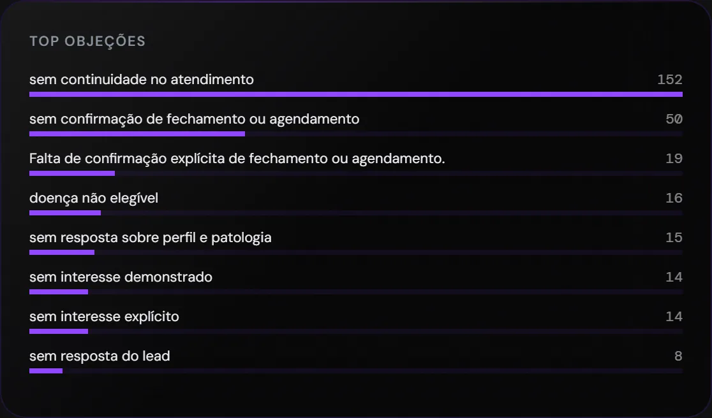
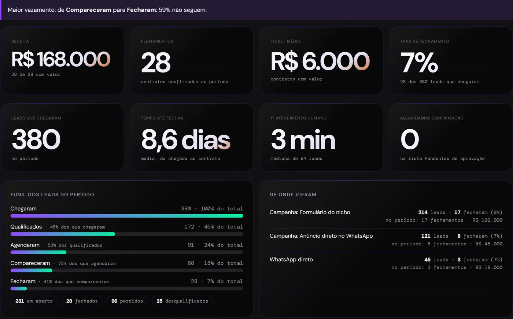
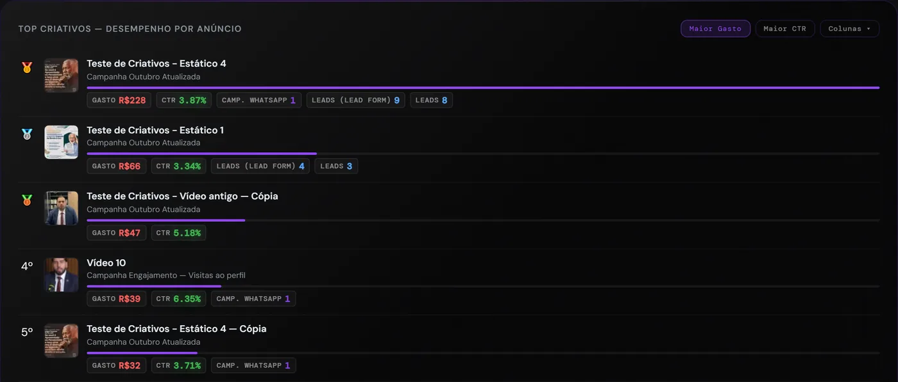
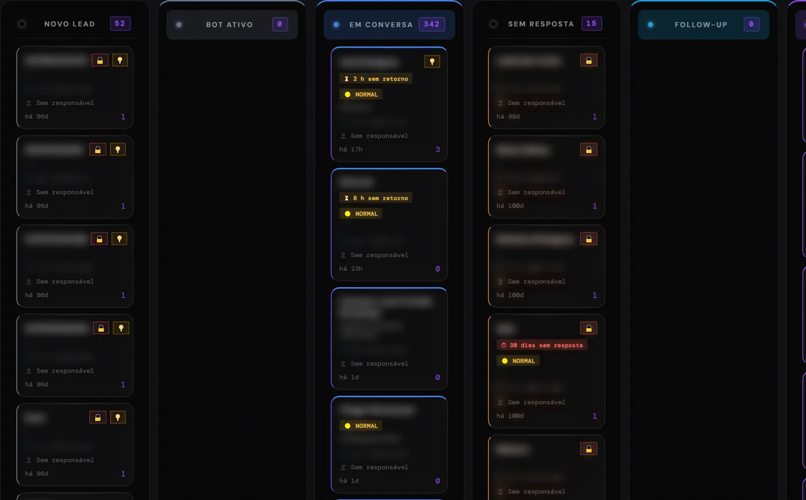
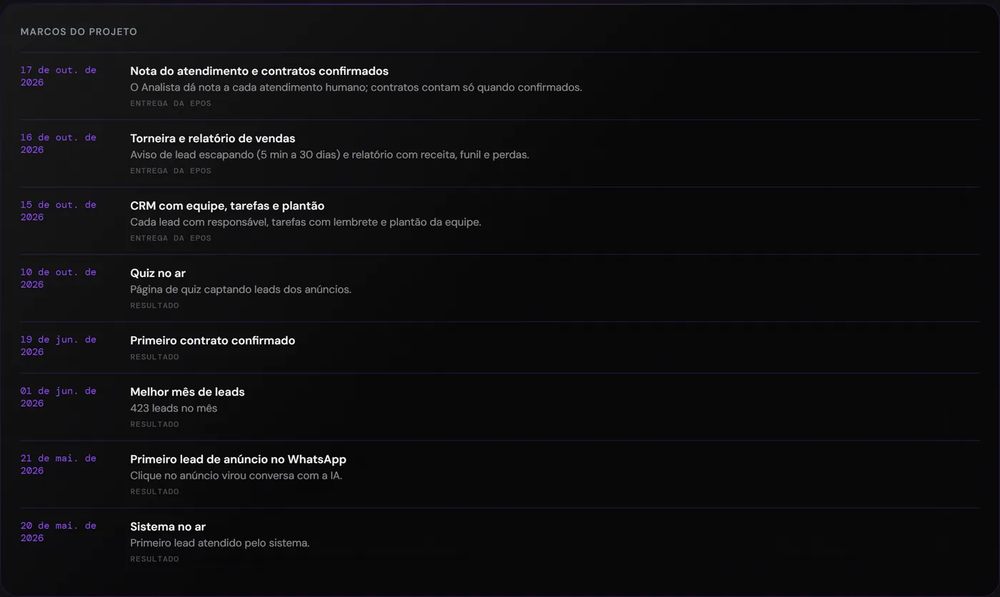
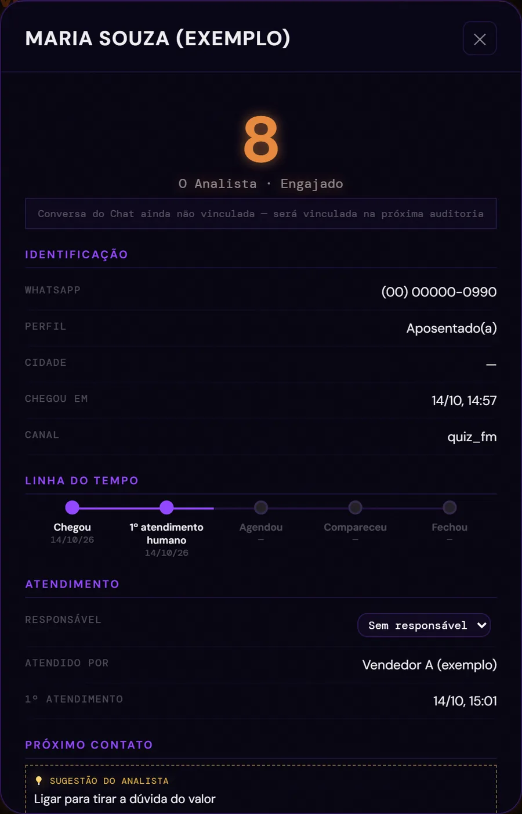
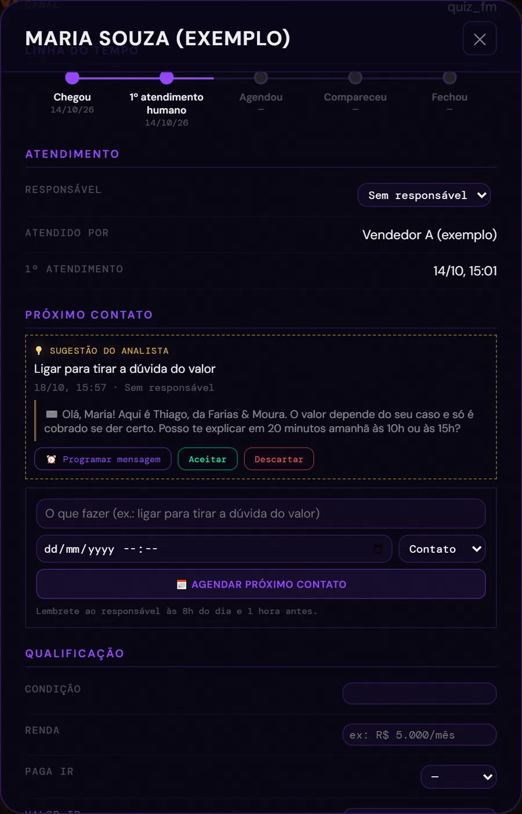
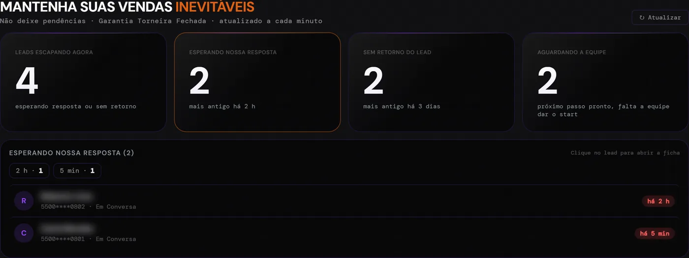

Você só não vende
se não quiser.
O Método Venda Inevitável é a estrutura de vendas completa, potencializada por inteligência artificial. O anúncio traz a pessoa certa. A IA não só atende em segundos: trata, qualifica, quebra objeções e traz argumentos de fechamento. Outra IA audita cada conversa, e o seu time só fala com quem está pronto para comprar.
Você paga pelo clique. O cliente some na conversa.
Seu pixel não sabe quem fez uma reunião com você. Não sabe quem fechou. Sem esse dado, a Meta continua tentando adivinhar e entrega o seu anúncio para quem clica, não para quem compra. É assim na maioria das agências e gestores de tráfego.
O caminho de um lead, num dia comum, na maioria das empresas que anunciam:
Ele clica no seu anúncio e manda: "Oi, queria saber mais".
Ninguém responde. Ele pergunta para mais dois concorrentes.
Alguém responde "Oi, tudo bem?", sem saber de qual anúncio ele veio nem o que ele quer.
Ele não responde mais. Ninguém retoma. Ninguém registra o porquê.
A agência manda um relatório de cliques. Ninguém leu as conversas. Ninguém sabe qual anúncio vendeu.
Fontes: Oldroyd/InsideSales, Lead Response Management Study; Harvard Business Review, "The Short Life of Online Sales Leads" (1,25 milhão de leads). Os dois estudos medem qualificação, não venda.
Quanto está indo embora todo mês no seu WhatsApp?
Coloque os seus números. A conta é sua, não uma média de mercado.
Contas: custo de cada contato = verba ÷ contatos · contatos que escapam = contatos × quantos escapam · verba no ralo = verba × quantos escapam · vendas perdidas = contatos que escapam × quantos fecham · receita = vendas perdidas × valor da venda.
Um ciclo fechado, do anúncio ao contrato.
Cada etapa conversa com a próxima. E o resultado volta para o anúncio, que fica melhor a cada venda.
Anúncio certo
Benchmark de toda a Biblioteca de Anúncios e campanhas otimizadas por quem agenda e fecha, não por clique.
Formulário, WhatsApp ou Landing Page
O lead chega já respondendo as perguntas que importam.
IA atende em segundos
24 horas, com a base do seu negócio e a ficha do lead.
Agenda sozinha
Marca na agenda do especialista e lembra o lead antes.
Seu vendedor entra
Recebe a ficha completa e só fala com quem está pronto.
O Analista audita
Lê 100% das conversas e diz o próximo passo de cada lead.
Painel ao vivo
Você vê o que vende, o que trava e quem está escapando.
A Meta aprende
Os dados de quem fechou deixam o público dos anúncios mais assertivo: a Meta encontra mais pessoas parecidas com quem compra.
Uma atende. A outra audita tudo.
As duas são modelos próprios, montados com a base de conhecimento do seu negócio. Não é robô de menu ("digite 1"), e não é uma IA genérica.
Conversa como a sua melhor atendente, às 3 da manhã
- Responde em segundos, 24 horas, 7 dias por semana
- Chama o lead primeiro, já citando o que ele respondeu no formulário
- Sabe de qual anúncio e campanha ele veio
- Entende áudio, foto e documento
- Responde objeções com os argumentos do seu negócio
- Agenda na agenda do especialista e confirma com o lead
- Para de falar na hora em que alguém da equipe assume
Lê cada conversa e diz o que fazer com cada lead
- Lê 100% das conversas, inclusive os áudios
- Resumo de cada lead, objeção e motivo de perda
- Próxima ação com a mensagem pronta para enviar
- Manda a sugestão no WhatsApp do vendedor; ele responde "pode programar"
- Nota de 0 a 10 para cada atendimento humano, com uma dica de melhoria
- Percebe quando o lead diz que fechou ou compareceu
- Junta as objeções que mais aparecem no seu negócio
- Você, gestor, vê todas as conversas de todos os vendedores, com a qualificação e a nota da IA
Teste a Donna agora
Aponte a câmera ou clique aqui e converse com a IA de atendimento da própria Epos. Faça as perguntas que o seu cliente faria.

Antes da conversa, o raio-X.
Um formulário próprio, do seu nicho, que abre em qualquer lugar e mede cada etapa. Experimente ao lado: é o mesmo que o seu cliente responde.
Não é uma ferramenta.
É a operação inteira.
Tudo o que está aqui está rodando hoje, em clientes reais.
Você vê tudo o que acontece no seu comercial
Sem depender do que o vendedor conta.
- Todas as conversas de todos os vendedores, num lugar só
- Cada conversa com resumo, qualificação e objeção, feitos pela IA
- Nota de 0 a 10 de cada atendimento, por vendedor, com a dica de melhoria
- Quem respondeu, em quanto tempo, e quem deixou o lead esperando
- Resultado por vendedor: leads, fechamentos e receita
- Quem da equipe entrou no painel e quanto tempo trabalhou nele
Inteligência de mercado
O que funciona no seu nicho, antes de gastar com anúncio.
- Buscador próprio na Biblioteca de Anúncios: benchmark de todo o mercadoEncontra as melhores práticas e os anúncios que dão resultado no seu nicho, para aplicar na sua campanha
- Radar de conteúdo: dezenas de canais do mercado monitorados todos os diasA IA pontua o que está performando e sugere como usar no seu conteúdo
- Raio-X dos concorrentes: funis, páginas, ofertas e anúncios ativos
- Leitura da Biblioteca de Anúncios do seu nicho
- Criativos comparados pelo que trazem de agendamento e contrato, não só de clique
- Relatório semanal da própria IA com melhorias para o atendimento
Tráfego e aquisição
Gente certa chegando, todo dia.
- Gestão de campanhas na Meta (Instagram e Facebook) e no Google
- Campanhas otimizadas pelo que vira agendamento e contrato
- Anúncio direto para o WhatsApp, com a origem de cada conversa registrada
- Formulário próprio (quiz) do seu nicho, rastreado por etapa
- Formulário nativo da Meta ligado ao WhatsApp: a IA chama quem preencheu
- Disparos estratégicos para a sua base, só pela API oficial do WhatsAppCom aprovação dos modelos de mensagem pela Meta e consultoria do fluxo
- Verba proporcional ao valor da sua venda, definida no diagnóstico
Atendimento com IA própria
Ninguém fica sem resposta, a qualquer hora.
- IA treinada com a base do seu negócio: serviços, casos, objeções e regras
- Resposta em segundos, 24 horas
- Chama primeiro quem preencheu o formulário, citando as respostas
- Recebe a ficha do lead a cada mensagem: perfil, etapa, campanha de origem
- Transcreve áudio e entende foto e documento
- Agrupa mensagens picadas antes de responder, como uma pessoa faria
- Agenda no Google Agenda do especialista, com o responsável no evento
- Lembra o lead antes da reunião
- Avisa o vendedor com a ficha completa no WhatsApp
- Humano assume quando quiser: a IA silencia naquele lead
- Caixa de entrada única com todas as conversas, dentro do painel
O Analista
Uma segunda IA que audita todo o comercial.
- Lê todas as conversas, inclusive áudio, minutos depois que o lead para de responder
- Varredura diária de toda a base
- Resumo, objeção, motivo de perda (por categoria) e nota de engajamento por lead
- Próxima ação com mensagem pronta, assinada com o nome de quem vai enviar
- Sugere a etapa do funil; a equipe aceita ou recusa
- Nota do atendimento de cada vendedor: velocidade, qualificação, objeção, próximo passo e tom
- Detecta quando o lead diz que fechou ou compareceu e pede a confirmação
Contra objeções
As objeções reais do seu negócio, respondidas antes de virarem perda.
- Base de objeções do seu negócio dentro da IA de atendimento
- Objeção detectada e registrada em cada lead
- Ranking das objeções que mais aparecem
- Roteiro de respostas para a equipe, com as objeções reais
- Ajuste semanal do atendimento nas reuniões de alinhamento
CRM e rotina comercial
Cada lead com dono, prazo e próximo passo.
- Funil em kanban por etapa, com busca e exportação
- Ficha completa: origem, qualificação, linha do tempo, notas, serviço e valor
- Responsável por lead, rodízio entre vendedores e plantão
- Próximo contato com data, lembrete às 8h e 1 hora antes
- Mensagem programada para a data certa (nunca duas para o mesmo lead)
- Assistente do vendedor no WhatsApp: ele responde a sugestão em linguagem natural
- Etiquetas e pastas do chat sincronizadas com o funil
- Contratos confirmados pela equipe, com data e valor reais
- Trava de etapa: o que a equipe decidiu, a automação não muda
Torneira Fechada
O vigia que não deixa nenhum lead escapar.
- Esperando resposta: lead que escreveu e não teve retorno
- Sem retorno: lead que parou de responder sem próximo passo
- Aguardando a equipe: o próximo passo está pronto, falta alguém dar o start
- Avisos de 5 minutos a 30 dias, para o responsável certo
- Resumo às 8h e às 14h no WhatsApp da equipe
- Lead sem plano ganha um próximo passo sugerido na hora
Rastreamento
Você sabe qual anúncio virou contrato.
- Origem de cada lead até o anúncio: campanha, conjunto, criativo e posicionamento
- Pixel e API de Conversões com deduplicação
- A Meta recebe quem virou lead, quem participou da reunião e quem fechou, com o valor
- Cliques no botão de WhatsApp registrados
- Funil do formulário por etapa: visita, cada pergunta, desistência e envio
- Dado sensível nunca vai para a Meta
Painéis e relatórios
Tudo num lugar, mais fácil que o Gerenciador de Anúncios.
- Painel de campanhas sem abrir o Gerenciador: gasto, CTR, leads, agendamentos e fechamentos por criativo
- Relatório de vendas: receita, fechamentos, ticket médio, funil, origem, motivos de perda, tempo por etapa e resultado por vendedor
- Visão do sócio: o mês contra o anterior e os marcos do projeto
- Relatório diário de leads no WhatsApp
- Uso do painel pela equipe: quem entrou e quanto tempo trabalhou nele
- Exportação em planilha
Segurança e proteção do número
O seu WhatsApp e os seus dados, protegidos.
- Fila de envio: nunca duas mensagens ao mesmo tempo, intervalo entre disparos
- Limite diário de reativações por número
- IP dedicado por número de WhatsApp
- Painel com login e permissão por pessoa; banco fechado
- Consentimento no formulário, páginas de privacidade e de exclusão de dados
- Alertas de erro e verificação diária do sistema
Algumas telas clique para ampliar






O risco fica com a Epos.
"Nenhum lead seu ficará sem atendimento e nenhum vendedor vai ter mais desculpas para não vender."
O painel mostra ao vivo quem está esperando resposta, quem parou de responder e quem está esperando a equipe. Avisos saem para o responsável certo, de 5 minutos a 30 dias. Você confere a garantia sozinho, a qualquer hora.

Somando as ferramentas, a conta não fecha.
Preços de mercado de cada peça, para uma equipe de 3 pessoas. E mesmo pagando tudo isso, ainda falta o mais importante.
| O que você precisaria | Ferramenta | Mensalidade | O que não faz |
|---|---|---|---|
| Gestão de tráfego profissional | Gestor ou agência | R$ 3.000 a 7.000 | Entrega clique; não acompanha a conversa nem o contrato |
| Quem atende o WhatsApp | Atendente ou SDR | R$ 2.000 a 3.500 + encargos | Horário comercial; esquece de retomar |
| CRM de WhatsApp (3 usuários) | Kommo, Clint, RD Station | R$ 410 a 740 | Alguém precisa montar, alimentar e operar |
| IA de atendimento | Blip Go | R$ 389 | Não traz cliente nem audita conversa |
| Rastreamento de conversas | Tintim | R$ 197 | Não atende nem agenda |
| Formulário | Typeform | R$ 215 a 435 | Não conversa com o lead depois |
| Reuniões semanais e expertise de negócio | Consultoria comercial com acompanhamento | R$ 3.000 a 8.000 | Não opera o atendimento nem a mídia |
| Melhorias na ferramenta e workshops | Desenvolvedor de automações · treinamento in company | à parte, por projeto | Cada melhoria vira um orçamento novo |
| Produção de conteúdo e criativos | Equipe interna, videomaker ou agência | R$ 2.500 a 6.000 | Não sabe quais criativos trazem quem fecha |
| Total montando sozinho | 9 fornecedores | R$ 11.700 a 26.300 / mês | Fora as melhorias e os workshops. E nada disso conversa entre si |
| Quanto custa continuar sem resultado | A sua conta na calculadora (bloco 3) | — | Receita que vai embora enquanto nada muda: — por ano |
| Método Venda Inevitável | 1 time | Tudo integrado e operado por nós, com reuniões semanais, expertise de negócio, melhorias contínuas na ferramenta e workshops para os assinantes | |
Preços públicos consultados em outubro de 2026, sujeitos a mudança: Kommo US$ 25 a 45 por usuário (kommo.com); Clint R$ 149 a 199 por usuário (useclint.com); Blip Go Essencial R$ 389 (blip.ai); Tintim plano Inicial R$ 197 (tintim.app); Typeform US$ 39 a 79 (typeform.com); gestão de tráfego profissional R$ 3.000 a 7.000 (tabela FreelaSemCrise 2026); SDR R$ 2.000 a 3.500 (Jooble e Indeed, 2026); consultoria comercial com acompanhamento mensal R$ 3.000 a 8.000 (Fullsales, 2026); produção de conteúdo e criativos R$ 2.500 a 6.000 (freelancer experiente ou agência pequena, Filmly 2026); automações a partir de R$ 2.500 por fluxo (Hora de Codar, 2026). Dólar a R$ 5,50.
Farias & Moura Advocacia
Escritório de direito previdenciário com anúncios no ar e leads chegando no WhatsApp a qualquer hora, sem estrutura para responder rápido, qualificar e acompanhar cada um até a decisão.
Formulário próprio do nicho, IA de atendimento 24h treinada com a base do escritório, agenda automática, CRM com a origem de cada lead, o Analista lendo todas as conversas e a Torneira vigiando quem estava escapando.
Sistema no ar, equipe treinada e evolução semanal: cada marco ao lado foi uma entrega.
Tráfego e sistema, juntos.
Só o sistema não adianta se o anúncio traz a pessoa errada. Só o tráfego não adianta se ninguém atende. Por isso entregamos junto, com a sua equipe treinada.
Produção de conteúdo e criativos (foto e vídeo) é contratada à parte. A verba dos anúncios é paga direto à Meta.
Em até 5 dias, rodando.
Diagnóstico
20 a 30 minutos com o Thiago. Você vê o sistema funcionando e onde os seus clientes estão escapando.
Onboarding
Uma call para liberar os acessos (número, agenda, conta de anúncios) e o material do seu negócio.
Implantação em até 5 dias
Sistema no ar, IA treinada e a sua equipe treinada para operar.
Operação
Reuniões semanais de alinhamento, com os números e as conversas na mesa.
O que todo mundo pergunta antes.
Já tenho agência de tráfego. Por que mudar?
A agência cuida do clique. O que acontece depois do clique (resposta, qualificação, agenda, retomada e contrato) normalmente fica sem dono. O Método junta os dois no mesmo time e mostra no painel qual anúncio virou contrato.
Já tenho CRM. Preciso de outro?
O CRM organiza, mas não atende às 23h, não agenda e não lê conversa. Aqui o CRM já vem ligado à IA de atendimento, ao Analista, à agenda e à origem de cada lead até o anúncio, sem ninguém precisar alimentar na mão.
A IA vai parecer um robô ou falar besteira?
Não é robô de menu ("digite 1"). É uma IA própria, que conversa em linguagem natural e responde com a base de conhecimento que você aprova. Você vê cada conversa, o Analista lê todas e qualquer pessoa da equipe assume a hora que quiser; nesse momento a IA silencia naquele lead.
E se o meu WhatsApp for bloqueado?
O sistema foi feito para proteger o número: nunca envia duas mensagens ao mesmo tempo, espaça os disparos, limita as reativações por dia e usa IP dedicado por número. Disparos para a base só pela API oficial do WhatsApp.
Preciso trocar de número?
O sistema funciona num número dedicado ao seu negócio, separado do pessoal. No diagnóstico o Thiago explica como configurar o seu caso.
Em quanto tempo começa a funcionar?
Em até 5 dias a partir da call de onboarding, com os acessos liberados e o treinamento da sua equipe incluído.
Em quanto tempo vejo resultado?
A IA começa a responder no primeiro dia, e o painel mostra a evolução desde a primeira semana. Nas reuniões semanais acompanhamos os números com você e ajustamos o que for preciso.
Tem fidelidade? Como funciona o contrato?
O contrato mínimo é de 6 meses, combinado com clareza antes de começar. Para quem fecha o plano anual, há uma condição especial.
O suporte demora?
Você não abre chamado e espera dias. Toda semana há uma reunião de alinhamento com o nosso time, que opera o sistema junto com você.
A configuração é complicada? Quem faz?
Nós fazemos. Você participa de uma call de onboarding e libera os acessos; a implantação e o treinamento da equipe são por nossa conta.
As conversas podem se misturar ou se perder?
Todas as conversas ficam num lugar só, ligadas à ficha do lead. Quando a mesma pessoa aparece com o número escrito de jeitos diferentes (com e sem o 9), o sistema junta os registros sem perder nada.
Funciona para o meu segmento?
Funciona para serviços de ticket médio e alto que vendem pelo WhatsApp e têm alguém para conduzir a reunião ou a venda: advocacia, saúde, odontologia, estética, imobiliária, educação, consultoria. O diagnóstico confirma se faz sentido no seu caso.
Preciso ter equipe comercial?
Precisa ter alguém para conduzir a reunião e fechar. A IA atende, qualifica e agenda; o sistema organiza o resto e mostra o que cada pessoa precisa fazer.
Quem faz o conteúdo e os criativos?
A produção de conteúdo e criativos é contratada à parte. A inteligência de mercado mostra o que está funcionando no seu nicho e o painel mostra quais criativos trazem quem fecha.
E a LGPD? Os dados dos meus clientes ficam seguros?
O formulário pede consentimento, o painel tem login e permissão por pessoa, o banco é fechado e dado sensível (como saúde ou renda) nunca é enviado para a Meta. Há páginas de privacidade e de exclusão de dados.
Quanto custa?
Depende do volume e do valor da sua venda. No diagnóstico mostramos quanto está escapando no seu caso e o investimento.
Descubra onde os seus clientes estão escapando.
Um diagnóstico gratuito de 20 a 30 minutos. A Donna faz o raio-X do seu comercial no WhatsApp e marca o horário com o Thiago.